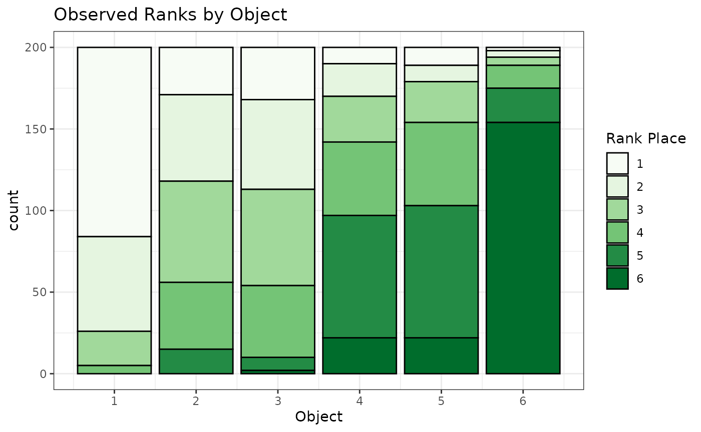
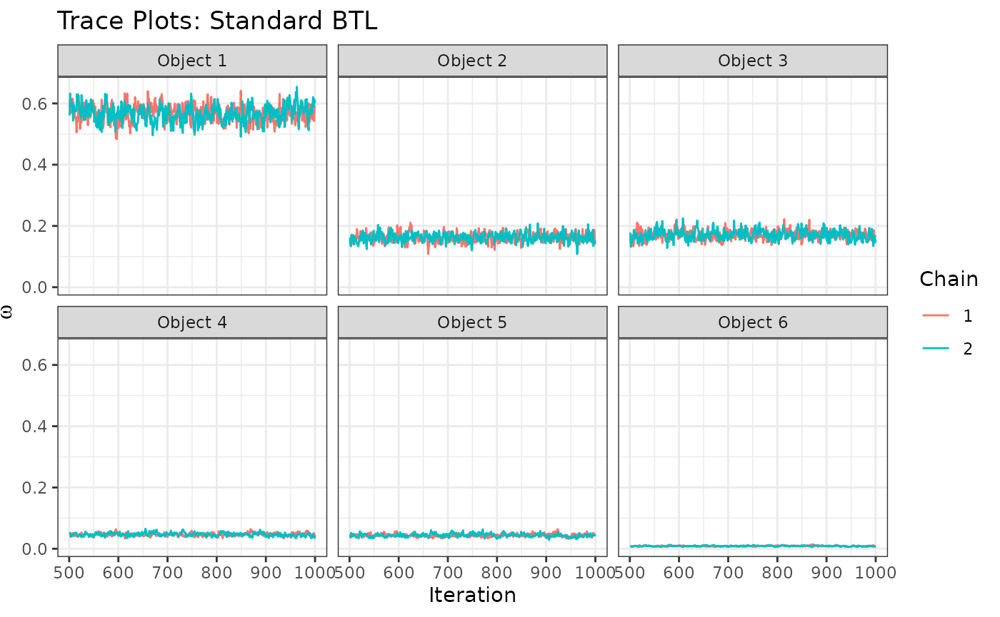
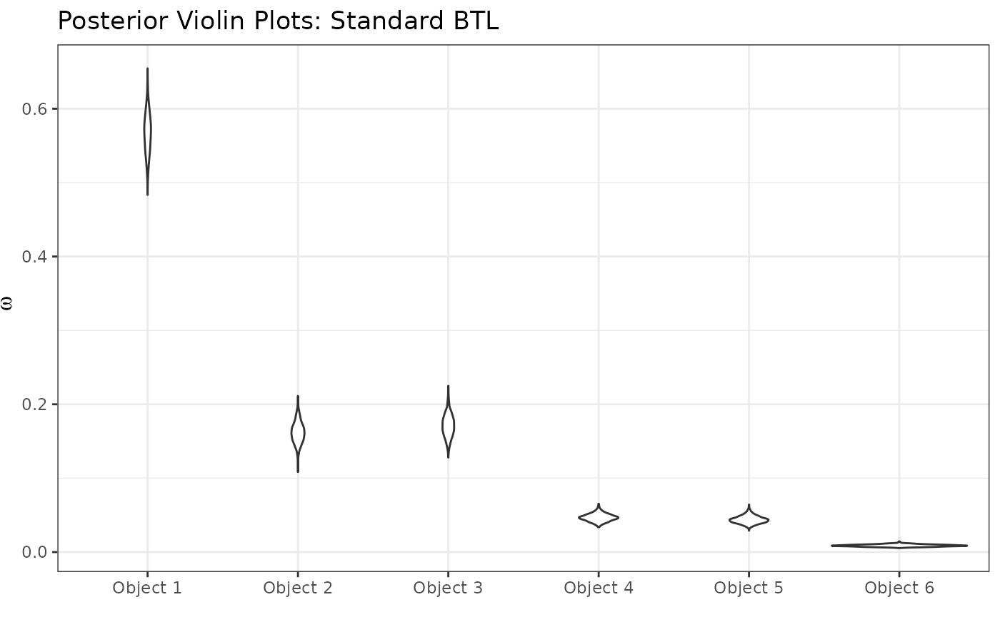
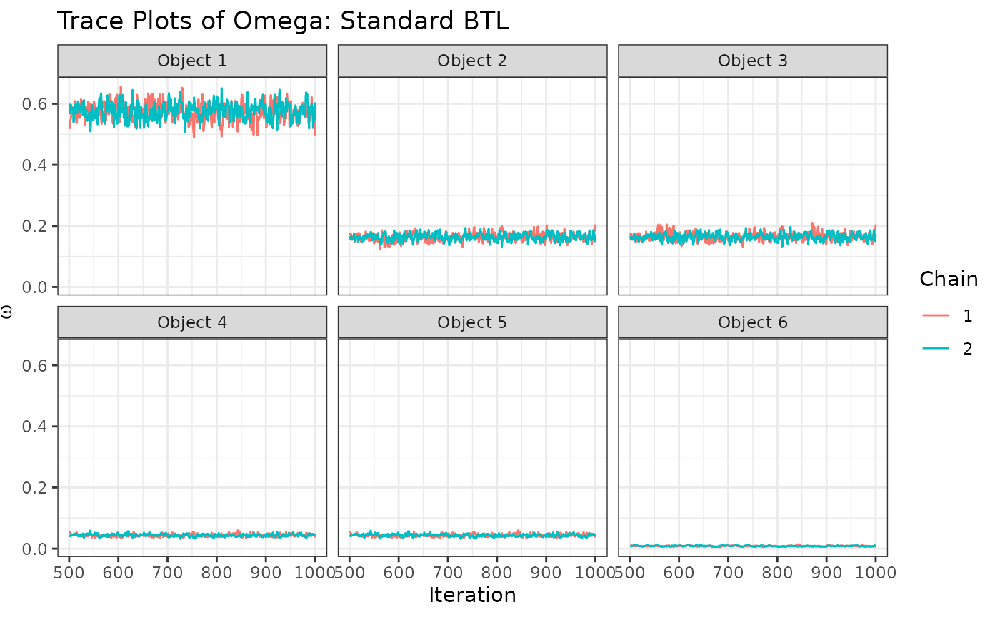

rankclust Tutorial
tutorial.RmdIn this tutorial, we demonstrate the key functionality of the
rankclust package on simulated data. The tutorial includes
code for random data generation, density calculation, and fitting of
Bayesian Bradley-Terry-Luce (BTL) models and Rank-Clustered BTL (RCBTL)
models. We begin by loading the packages necessary for these tasks.
Random Data Generation
We first generate samples from a BTL model in which some objects have equal worth parameters (i.e., are “rank-clustered”). Specifically, we will draw observations from \(I=200\) judges who each assess \(J=6\) objects. The true, underlying parameter worth values are \[\omega = \big(\frac{64}{105},\frac{16}{105},\frac{16}{105},\frac{4}{105},\frac{4}{105},\frac{1}{105}\big)\] We have chosen these values to sum to 1, but they need not! Our choice of \(\omega\) means that there are 4 rank-clusters: 2 singletons and 2 pairs. The true overall ordering of objects would be \(1\prec\{2,3\}\prec\{4,5\}\prec6\).
set.seed(1)
Pi <- rBTL(I=200,omega=c(64/105,16/105,16/105,4/105,4/105,1/105))
head(Pi,4)
#> [,1] [,2] [,3] [,4] [,5] [,6]
#> [1,] 1 3 2 6 5 4
#> [2,] 5 3 1 2 4 6
#> [3,] 3 1 5 2 4 6
#> [4,] 1 2 4 3 5 6We can see from the above output that the second judge placed object 5 in first place, object 3 in second place, object 1 in third place, object 2 in fourth place, object 4 in fifth place, and object 6 in sixth place.
Let’s visualize our observed rankings, \(\Pi\):
ggplot(melt(Pi),aes(x=value,fill=factor(Var2)))+
geom_bar(color="black")+theme_bw()+
scale_fill_manual(values=c("#F7FCF5","#E5F5E0","#A1D99B","#74C476","#238B45","#006D2C"))+
scale_x_continuous(breaks=1:10)+
labs(x="Object",fill="Rank Place",title="Observed Ranks by Object")
We can see in the above stacked barchart that object 1 receives the most first-place votes, while objects 2 and 3 receive fewer first-place places, but similar numbers of first-place votes between the two of them. Knowing the true worth parameters, \(\omega\), this is unsurprising since objects 2 and 3 are rank-clustered and jointly have the second-highest object-level worth parameter. However, it can be hard to understand potentially complex rank orderings based on marginal plots. Thus, we’ll use statistical models to better estimate the relative preferences of this (simulated) population.
Model Estimation and Assessment: Standard BTL
Let’s now fit a standard BTL model to the observed rankings. We place
an independent Gamma(\(a_\gamma=3,b_\gamma=2\)) prior on each
worth parameter, \(\omega_j\). Note
that we are running 2 chains of 1000 iterations, remove the first half
as burn-in, and perform no thinning. All posterior samples of \(\omega\) are normalized post-hoc to sum to
1 (by default; can be changed using the normalize_omega
argument).
resBTL <- mcmc_BTL(Pi=Pi,J=6,a_gamma=3,b_gamma=2,
num_iters=1000,chains=2,burn_prop = 0.5, thin = 1,seed = 1)
#> [1] "Estimating chain 1 of 2."
#> [1] "Estimating chain 2 of 2."
head(resBTL)
#> chain iteration omega1 omega2 omega3 omega4 omega5
#> 1 1 501 0.5866994 0.1491845 0.1651737 0.04387851 0.04585898
#> 2 1 502 0.6162836 0.1498351 0.1452380 0.04470279 0.03562536
#> 3 1 503 0.6127107 0.1573117 0.1455899 0.03864798 0.03924107
#> 4 1 504 0.5711446 0.1701438 0.1702835 0.03932126 0.04257707
#> 5 1 505 0.5686603 0.1717451 0.1677084 0.04420377 0.04005833
#> 6 1 506 0.5963927 0.1543658 0.1549673 0.04521449 0.04141905
#> omega6
#> 1 0.009204954
#> 2 0.008315110
#> 3 0.006498562
#> 4 0.006529828
#> 5 0.007624145
#> 6 0.007640620Next, we’ll view trace plots created by the package’s
trace_ggplots function (to assess convergence and mixing)
and posterior violin plots of the object-specific worth parameters
created by the package’s posterior_ggplots function.
traceplots <- trace_ggplots(mcmc = resBTL,object_names = paste0("Object ",1:6))
traceplots$traceOmega+
labs(title="Trace Plots: Standard BTL")
posterior_ggplots(mcmc = resBTL,object_names = paste0("Object ",1:6))+
labs(title="Posterior Violin Plots: Standard BTL")
We can start to see some patterns emerging: Object 1 is most preferred, followed by objects 2 and 3 (similarly preferred between them), followed by objects 4 and 5 (similarly preferred between them), followed by object 6 in last place. These similarities among groups, however, are uncertain and not model-specified. This leads us to the Rank-Clustered BTL, which is able to specifically infer rank-clusters of objects based on the observed ranking data.
Model Estimation and Assessment: Rank-Clustered BTL
We now fit a Rank-Clustered BTL model to the observed rankings. As
specified by the model, we place a PSSF prior with hyperparameters \(a_\gamma=3\), \(b_\gamma=2\), and \(\lambda=3\) to be vague. Note that we are
running 2 chains of num_iters=500 outer iterations and
nu_reps=2 inner iterations for a total of 1000 iterations
per chain, but remove the first half as burn-in and perform no thinning.
All posterior samples of \(\omega\) are
normalized post-hoc to sum to 1 (by default; can be changed using the
normalize_omega argument).
nu0 <- apply(resBTL[,-c(1,2)],2,mean) # initialize at posterior mean of standard model
resRCBTL <- mcmc_RCBTL(Pi=Pi,J=6,a_gamma=3,b_gamma=2,lambda=3,nu0=nu0,
num_iters=500,nu_reps=2,chains=2,burn_prop=0.5,thin=1,seed=1)
#> [1] "Estimating chain 1 of 2."
#> [1] "Estimating chain 2 of 2."
head(resRCBTL)
#> chain iteration K omega1 omega2 omega3 omega4 omega5
#> 1 1 501 4 0.5176336 0.1782277 0.1782277 0.05702493 0.05702493
#> 2 1 502 4 0.5430463 0.1716468 0.1716468 0.05097095 0.05097095
#> 3 1 503 4 0.5481608 0.1744917 0.1744917 0.04646537 0.04646537
#> 4 1 504 4 0.5576340 0.1681091 0.1681091 0.04772825 0.04772825
#> 5 1 505 4 0.5916405 0.1546080 0.1546080 0.04525227 0.04525227
#> 6 1 506 4 0.5723464 0.1630075 0.1630075 0.04662679 0.04662679
#> omega6 nu1 nu2 nu3 nu4 nu5 nu6 G1 G2 G3 G4 G5 G6
#> 1 0.011861108 0.06721179 0.3231357 1.0099396 2.933206 NA NA 4 3 3 2 2 1
#> 2 0.011718278 0.07075745 0.3077734 1.0364396 3.279029 NA NA 4 3 3 2 2 1
#> 3 0.009925195 0.06226651 0.2915042 1.0946875 3.438931 NA NA 4 3 3 2 2 1
#> 4 0.010691234 0.06856602 0.3060953 1.0781333 3.576270 NA NA 4 3 3 2 2 1
#> 5 0.008638973 0.05391636 0.2824222 0.9649181 3.692464 NA NA 4 3 3 2 2 1
#> 6 0.008385028 0.04999783 0.2780239 0.9719732 3.412759 NA NA 4 3 3 2 2 1Next, we’ll view trace plots created by the package’s
trace_ggplots function (to assess convergence and mixing)
and posterior violin plots of the object-specific worth parameters
created by the package’s posterior_ggplots function.
traceplotsRCBTL <- trace_ggplots(mcmc=resRCBTL,object_names = paste0("Object ",1:6))
traceplotsRCBTL$traceK+
labs(title="Trace Plot of K: Rank-Clustered BTL")
traceplotsRCBTL$traceOmega+
labs(title="Trace Plots of Omega: Standard BTL")
posterior_ggplots(mcmc = resRCBTL,object_names = paste0("Object ",1:6))+
labs(title="Posterior Violin Plots: Rank-Clustered BTL")Just as before, we can see that Object 1 is most preferred, followed
by objects 2 and 3 (similarly preferred between them), followed by
objects 4 and 5 (similarly preferred between them), and followed by
object 6 in last. How “similar” are these groups objects preferred? We
can see this by examining a posterior clustering matrix, as created by
the package’s cluster_ggplots function:
cluster_ggplots(mcmc = resRCBTL,object_names = paste0("Object ",1:6))+
labs(title="Rank-Clustering Posterior Probabilities")
Based on the above figure, we see that Objects 2 and 3 are rank-clustered with high posterior probability, as are objects 4 and 5. Objects 1 and 6 are in singleton clusters. This result precisely aligns with the true rank-clustering of objects based on the \(\omega\) that generated the rankings.